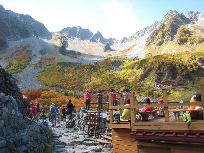
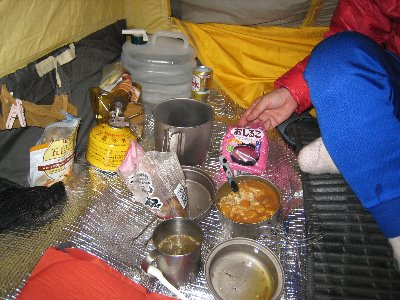
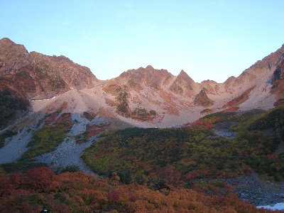
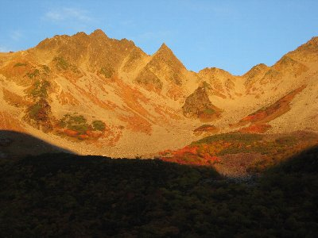

秋の涸沢（からさわ）ハイク | 2008年10月 |
|---|---|
| 10月になると、そろそろ紅葉の話が出てくる時期ですが、山の上は既に秋模様、紅葉シーズンです。 紅葉で有名な場所と言うと、上高地のさらに奥にある涸沢を口にする方も多いのではないでしょうか。そんな涸沢にハイキングに行きました。 メンバーは最小の2名。当初は3名いたのですが、この時期の涸沢にある小屋はどこも満員御礼、一つの布団に3名というのが当たり前、そんな話をしたら3名が2名になりました。まあ、山小屋に慣れない人にはキツイよね。って言うか一つの布団に3名ってどうやって寝るんだよってきになります。 人数が減ったこともあり、メンバーもRyuuさんと私（べっしー）だったので、テント泊にしようって話になりました。 | |
 |  緑が多いモノの綺麗です〜 |
| 前日夜に手前の沢渡へ、早朝6時過ぎの上高地行きバスにて河童橋へ。朝7時前だと言うのに、河童橋は混雑してます。ここから歩いていくわけですが、涸沢のいい所はアクセス時間が短く、その半分が平坦な道ということです。 梓川沿いに河童橋→明神池→徳沢→横尾まで、ほぼ平坦な道を3時間。横尾には10時位でしたか。横尾までは道幅も広く、関係者は車で行けます。そんな道です。 横尾からは道が別れ、つり橋を渡り西に向かいます。道は狭いけどアップダウン厳しく有りません。左手に断崖絶壁な山、屏風岩が見えてきます。横尾から1時間ほどの所にある沢で休憩。ここからは登りです。ここまでほとんど登りではないです。 登りと言っても2時間ほど行けば涸沢なので、気分的にはかなりゴールに近いですね。道は狭く人で混んでいますが、ここら辺りから木々も何となく色づいて来ているようです。ナナカマドもオレンジ色に染まってます。 | |
|  涸沢ヒュッテから涸沢岳が一望です。 |  ここが今晩のお宿、テント場。いや〜混んでます。 |
| 1時間半ほどで涸沢が見えました。もうゴールですが、景色も開けてきて木々も色づいてきたので写真を撮りながら進むため、結局当初の予定通りに涸沢ヒュッテ到着。 涸沢は紅葉が若干（ほんとに若干）早いかなという具合ですが、奥穂高や北穂高に囲まれ、岩の色と紅葉、紅葉になりきれない緑と、様々な彩りで素晴らしく綺麗でした。景色自体も南アルプスとは違った荒々しさがあり、人気スポットと言うのも頷けます。 | |
|  本日の夕食。私はおでんで一杯♪ |  早朝のテント場。 |
| テント場で受付を済ませ、テントを張って、早速涸沢ヒュッテのデッキにて乾杯！ 涸沢ヒュッテのデッキは、小屋の上に建っており、景色が最高の場所です。売店もビール、日本酒、おでんにラーメンと様々な物が売られていて、金さえ気にしなければ何も持ってこなくても、十分楽しめそうです。 夕食はお湯で温めて作るレトルトを中心に、持ってきたお酒で一献。Ryuuさんカレー、私おでんといった感じで、つまみもあり日本酒、泡盛とかなりいい気分になりました。寝たのは21時だったでしょうか？ 明日は曇りのち雨の予報なので、ちょっと心配です。 | |
|  山に陽があたり始めました。この時はピンク色。 |  これ、ホントは凄いオレンジ色なんです。 暗いところとのコントラストが綺麗でした。 |
| 早朝、周りにテントから話し声が聞こえてきたので、私は5時起床。展望がよさそうなデッキに行ってみると、既にカメラで陣取る人たちと、早朝から営業している売店と、既に歩き出そうとしている人たちであふれていました。天気はまだ大丈夫。 6時くらいに、涸沢岳が太陽に照らされて真っ赤に染まり始めました。これは綺麗ですね〜 カメラマン達が一斉にシャッターを切ります。私もコンパクトデジカメでパシャパシャと。空気が澄んでいるってのがわかります。写真では現地の感動をお伝えできないので残念です。 | |
 一部の紅葉と相まって、オレンジが素晴らしい〜 |  山を見ながら朝食 |
| ひとしきり感動したあと、起き出したRyuuさんと朝食。若干雲が出てきた涸沢を8時に出発し、雨に降られないうちに降りてしまおうと、ドンドン歩き、お昼には河童橋へ。バスがすぐ出そうなので、そのまま乗車。沢渡で遅い昼飯をとり、温泉に浸かって帰りました。 また、新しい場所を発見した感じで、今回の山行は終了。ある程度楽に行ける場所なので、テント山行にはいいかも知れませんね。ここはいつ行っても景色は良さそうです。 | |
| 写真＆コメント ｂｙべっしー | |